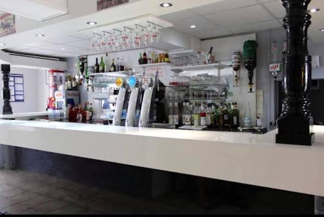

Restaurant ouvrier · Bellerive-sur-Allier
Café de la Paix
Cuisine maison, service rapide et prix honnêtes.
Le midi du lundi au samedi, et le vendredi soir pour nos soirées spéciales.
Ici, on mange bien
et on ne traîne pas.
Artisans, gars du chantier, employés du coin ou habitués du quartier : au Café de la Paix, tout le monde est à la même table. Une cuisine de ménage préparée chaque matin, une assiette qui tient au corps et un service qui respecte votre pause déjeuner.
- Fait maisonPlats mijotés, purée maison, desserts du jour.
- Formule complèteEntrée, plat, fromage ou dessert, café et ¼ de vin.
- Terrasse au calmeÀ l'abri de la rue, à l'ombre de la pergola.

Une fois par semaine
Le vendredi soir,
on remet le couvert.
La semaine est finie, le café change d'ambiance. Chaque vendredi soir, on vous prépare une soirée spéciale : plat unique, soirée à thème, tablées entre collègues ou entre amis, apéro qui se prolonge en terrasse aux beaux jours.
Les places partent vite : pensez à réserver.
Réserver ma tableProchaine soirée
Programme annoncé chaque semaine
Vendredi · à partir de 19 h
Le thème de la soirée est affiché à l'ardoise du café. Passez nous voir ou appelez-nous pour connaître le menu.
Dehors comme dedans
La terrasse et le bar
Derrière le café, une grande terrasse abritée de la rue : pergola en bois, parasols et lauriers-roses. À l'intérieur, le comptoir et ses bières pression pour le café du matin ou le verre de fin de journée.


Infos pratiques
Horaires
Groupes et équipes
Repas d'équipe, fin de chantier, anniversaire du vendredi soir : appelez-nous la veille, on s'organise.